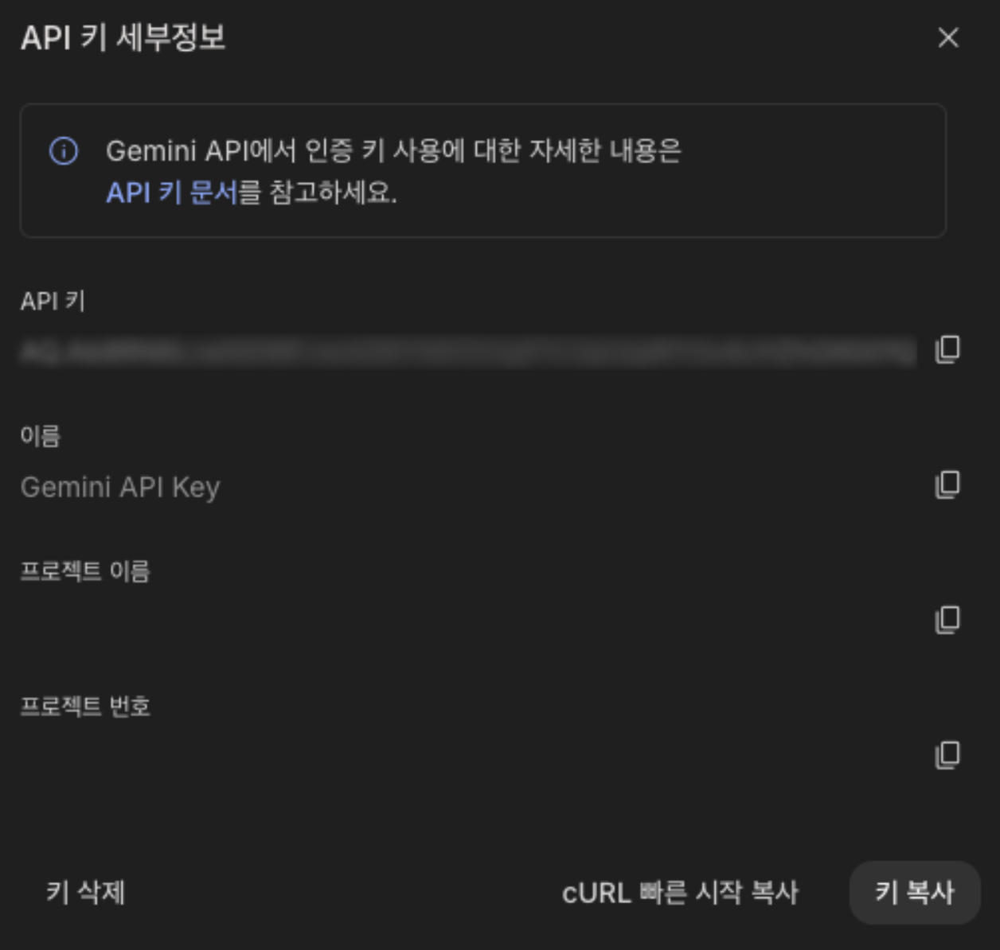
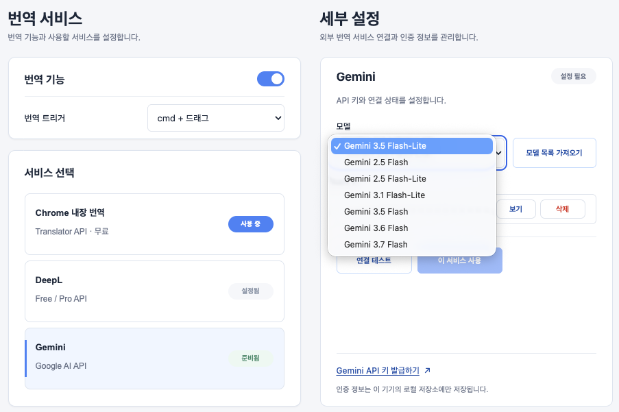
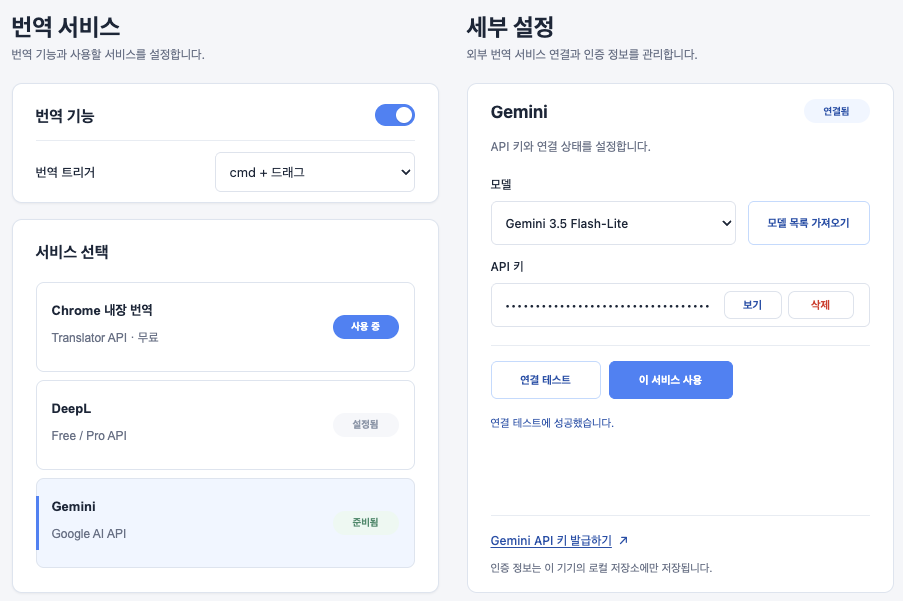

네이버 영어사전 크롬 확장프로그램
Gemini API
연동하기

네이버 영어사전 · NaverDic은 Chrome 내장 번역, DeepL, Gemini를 문장 번역 서비스로 지원합니다. 이 문서에서는 외부 서비스인 Gemini를 연결하는 방법을 안내합니다.
Gemini API를 사용하려면 설정 페이지의 번역 서비스에서 Gemini를 선택하고 API 키와 사용할 모델을 설정하세요.
설정 방법
- Google AI Studio 웹사이트에서 Gemini API 키를 만든 후 복사합니다.

- 설정 페이지의 Gemini 세부 설정에서 API 키를 붙여넣고 모델 목록 가져오기를 누른 뒤 원하는 모델을 선택합니다.

- 연결 테스트를 눌러 성공하면 이 서비스 사용을 누릅니다.
